Android에서 iOS까지
Android 개발자 시절부터 iOS를 학습하고 GS Retail 앱을 양 플랫폼으로 운영했습니다. 이후 iOS 개발에 집중하기로 선택해 ONEstore에 iOS 개발자로 이직했습니다.
Android/iOS Operation · iOS Career TransitionSenior iOS Application Developer
Android와 iOS, SI 구축과 SM 운영, 고객사 프로젝트와 인하우스 서비스를 거치며 모바일 제품의 구축·배포·운영·개선을 경험했습니다. 레거시를 점진적으로 현대화하고, 여러 직군이 함께 사용할 수 있는 개발 기준을 만드는 데 강점이 있습니다.
ABOUT
기술적 제약과 대안을 여러 직군이 이해할 수 있는 언어로 설명하고, 구현 결과가 개인의 지식으로 남지 않도록 코드·문서·공통 기준으로 정리합니다.
Android 개발자 시절부터 iOS를 학습하고 GS Retail 앱을 양 플랫폼으로 운영했습니다. 이후 iOS 개발에 집중하기로 선택해 ONEstore에 iOS 개발자로 이직했습니다.
Android/iOS Operation · iOS Career Transition기획·디자인·개발의 언어 차이를 조율하고 합의한 기준을 문서화합니다. 이 경험을 바탕으로 ONEstore Design System 기술 파트 PM을 맡아 배포 가능한 산출물로 연결했습니다.
Cross-functional Communication · DocumentationUIKit을 SwiftUI로, WebView 구매 목록을 Native로 전환했습니다. MVVM·MVI로 상태 흐름을 분리하고 Swift Testing 기반 테스트를 작성하며 운영 앱을 점진적으로 개선했습니다.
UIKit → SwiftUI · WebView → Native · Testing웹에이전시 SI, 고객사 SM, 인하우스 서비스에서 B2B·B2C·사내 앱과 Native·Hybrid 앱을 개발했습니다. 커머스·콘텐츠·플랫폼·모빌리티 제품을 배포하고 운영했습니다.
SI · SM · In-house · 4 DomainsCAREER
플랫폼개발팀 · 매니저 · iOS Developer
아키텍처나 디자인 패턴 없이 UIKit·Objective-C로 구성된 운영 앱을 분석하고, 작은 화면부터 SwiftUI와 테스트 가능한 구조를 도입했습니다.
MVVM·MVI 두 구조를 비교 적용하고 Swift Testing Unit Test와 Coverage 향상 전략을 수립했습니다.
Crashlytics와 API 요청·응답 로깅을 중앙화해 개발자별 로그 형식과 운영 분석 기준을 통일했습니다.
Color·Font·Radius의 시맨틱 토큰과 컴포넌트 기준을 모듈로 구성해 신규 화면과 배포 버전에 적용했습니다.
iOS 개발 · 기술 파트 PL / PM
ONEstory 인하우스 콘텐츠 서비스 운영에서 시작해 Apple DMA 대응 글로벌 앱 마켓 기술 검토와 조직 최초 디자인 시스템 구축으로 역할을 확장했습니다.
MarketplaceKit feasibility, 아키텍처·네트워크·J/S Interface를 설계하고 Apple Cork Lab과 3단계 앱 검증을 수행했습니다.
4계층 구조, 공통 컴포넌트, 토큰 자동화, Code Connect, SPM 배포와 전사 세미나 3회를 이끌었습니다.
도서 다운로드·보관·삭제, 소셜 로그인, Eye Tracking SDK, 구매 목록 Native 전환과 정기 배포를 담당했습니다.
Mobile Developer · Android / iOS
GS 계열사 Android SI 프로젝트 후 GS Retail 운영팀으로 이동해 전사 모바일 앱 10종 이상을 운영하고 GS Fresh 차세대 구축의 Mobile PL을 맡았습니다.
기능 개발, 월별 정기·긴급 배포, VOC·Crash·OS·deprecated API 대응과 사업부 일정 조율을 수행했습니다.
2개월 안에 Android/iOS 앱 4종을 구축하기 위해 공통 시나리오와 기술 feasibility, J/S Interface 규격을 정리했습니다.
외부 인력의 빠른 인볼브를 위한 가이드와 사이드 이펙 검수, 인수인계까지 운영자 관점에서 관리했습니다.
Android Developer · Web Agency
다양한 도메인의 Android Native·Hybrid 앱을 제안부터 출시와 운영까지 경험하고, 기획·디자인·서버·웹 개발자와 협업하는 기반을 만들었습니다.
CafeUnion, LuxeWater 등 중국 시장 앱에서 WeChat·QQ·Baidu·Alipay와 WebView 연동을 구현했습니다.
올가홀푸드, 할리스커피, 폴리스쿨, SK FashionMall iPad 앱 등 브랜드·커머스 프로젝트를 수행했습니다.
메인 Android 개발자로 회의실 예약·휴가 결재·푸시를 포함한 앱을 구축하고 운영했습니다.
TECH SKILLS
Swift · Objective-C · UIKit · SwiftUI · Combine · RxSwift
Clean Architecture · MVVM · MVI · Dependency Injection · XCTest · Swift Testing
Tuist · Jenkins · GitHub Actions · Fastlane · SPM
Git · Bitbucket · SVN · Jira · Wiki · Slack · Teams · Figma · Zeplin · Postman · Swagger
Claude Code · OpenAI Codex · Cursor · ChatGPT · Pencil · Figma Make
Kotlin · Java · Native / Hybrid Application
GS Retail 운영 앱과 ONEstore 프로젝트에서 비동기 상태와 이벤트 흐름을 구성했습니다.
Global App Market, Encar 전환 화면, Note Cleaner와 Mindly에서 화면·도메인·데이터 경계를 설계했습니다.
프로젝트 생성·모듈 관리와 정기 배포, TestFlight/App Store 배포 흐름에 적용했습니다.
ONEstore Design System에서 디자인 자산과 코드 리소스·스니펫을 연결했습니다.
SELECTED PROJECTS
기술 파트 PM · 플랫폼 간 기준 조율, iOS 컴포넌트 구조와 디자인-코드 연결 흐름 설계
iOS·Android·Web·디자인 조직이 같은 컴포넌트를 서로 다른 명칭과 레이어로 정의해 반복 구현과 커뮤니케이션 비용이 발생했습니다.
바이위클리 회의로 컴포넌트 정의·레이어·토큰 기준을 맞추고 Top Navigation Bar를 대표 사례로 공통 개념과 플랫폼 예외를 검증했습니다.
Core → Style → Component → Screen 구조와 방법론을 설계했습니다. 토큰·공통 컴포넌트·SPM, Style Dictionary CI/CD와 Code Connect 스니펫을 구축했습니다.
반복 설명과 해석 과정을 공통 문서·코드 기준으로 전환해 커뮤니케이션 비용과 신규 개발자의 초기 인볼브 부담을 낮췄습니다. 전사 세미나 3회로 활용 방법을 전파했습니다.
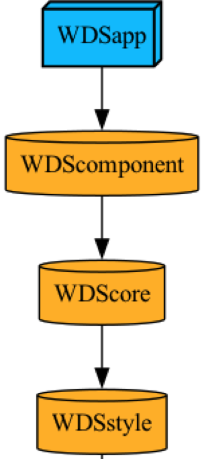
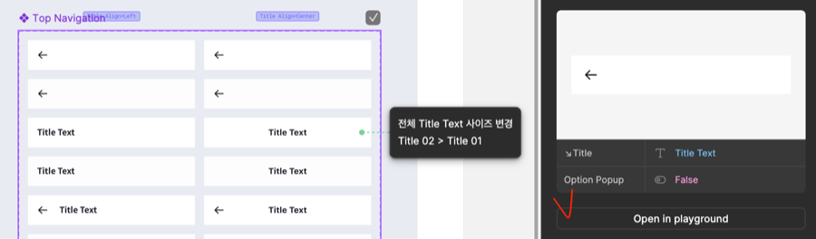
iOS 파트 PL · 기술 feasibility, 아키텍처·네트워크·J/S Interface 설계, 공통 UI와 상세 화면 구현
EU DMA 기반 MarketplaceKit은 국내 개발·디버깅이 제한됐고 초기 문서도 불완전해 사업·투자 판단에 필요한 구현 가능성을 확인하기 어려웠습니다.
Apple과 이메일·화상 미팅으로 누락 조건을 확인하고, 국가별 확장과 Presentation 교체를 고려해 Clean Architecture와 SwiftUI를 선택했습니다.
팀의 iOS 대표로 Apple Cork Technical Lab에 참석해 설치·업데이트 흐름을 직접 구현했습니다. 귀국 후 실행 데이터를 C레벨 feasibility 보고와 3단계 개발 계획에 반영했습니다.
3단계 동작 앱, 확장 가능한 아키텍처, 자체 네트워크 모듈과 구현 범위·리스크 문서를 산출해 투자 검토 과정의 기술 근거로 활용했습니다.
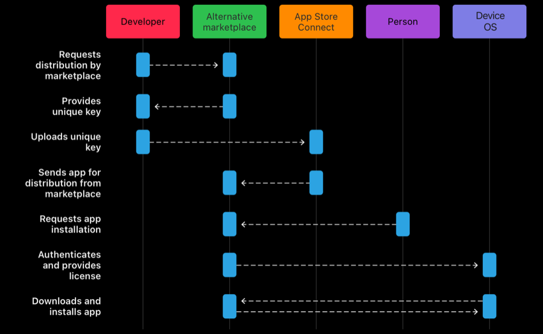
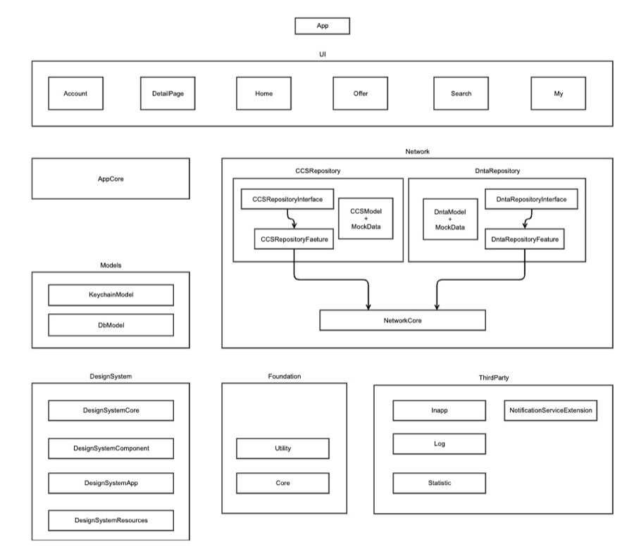
iOS Developer · SwiftUI 화면 2개, 테스트 구조, 운영 코드 중앙화와 디자인 시스템 초기 적용
UIKit·Objective-C 화면에 명확한 상태 구조와 테스트 경계가 없고 로그·리소스 선언도 파편화돼 있었습니다.
Leaf 화면부터 MVVM·MVI 두 버전으로 SwiftUI 전환을 시작하고 Unit Test와 Coverage 전략을 적용했습니다. Crash/API 로그와 시맨틱 토큰을 중앙화했습니다.
신규 화면이 따를 SwiftUI·테스트 시작점과 통일된 운영 분석 기준을 만들고, 토큰·컴포넌트를 실제 배포 화면에 적용했습니다.
SwiftUI 화면, Swift Testing, 중앙 로그 규격, 디자인 토큰 모듈과 Cursor Rules 초기 설계
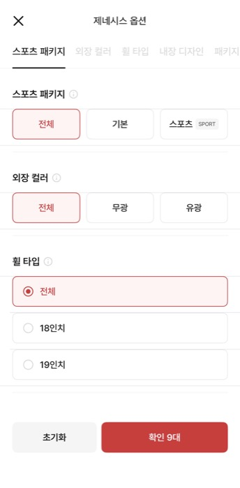
Android·iOS 운영 개발 / Mobile PL · 전사 앱 운영과 차세대 모바일 구축 범위 조율
서로 다른 사업부와 배포 주기를 가진 다수 앱의 안정성을 유지하는 동시에 Android/iOS 차세대 앱 4종을 단기간에 구축해야 했습니다.
채널별 배포 범위와 Fastlane 흐름을 관리하고 VOC·Crash·OS 이슈를 대응했습니다. 차세대 구축에서는 공통 사용자 시나리오와 J/S Interface 규격을 선행했습니다.
GS Retail 전사 앱 10종 이상을 운영했고, 양 플랫폼의 해석 차이와 재작업을 줄이며 2개월 안에 차세대 앱 4종을 오픈했습니다.
외부 개발자의 인볼브 가이드, 결과물 인스팩션, 사이드 이펙 검수와 인수인계까지 운영자 책임 범위로 수행했습니다.
PROJECT ARCHIVE
웹툰·웹소설·전자책·오디오북 서비스에서 도서 다운로드·삭제·보관·오프라인 열람, 구매·대여, Kakao·Apple 소셜 로그인과 Eye Tracking SDK를 구현했습니다. WebView 구매 목록을 Native로 전환하고 iPad·Widget·정기 배포와 VOC·OS 대응을 담당했습니다.
Swift · UIKit · Objective-C · SwiftUI · iPad · Widget중국 O2O 커머스 Android 앱. 주문 흐름과 WeChat·QQ·Baidu·Alipay SDK 4종을 연동했습니다.
Java · Android · O2O · China SDK중국 생수 주문 서비스의 WebView·JavaScript Interface와 현지 로그인·결제 SDK를 구현했습니다.
Java · WebView · Hybrid App기존 웹 커머스에 Native 바코드·QR·푸시 기능을 연결한 Android 앱을 구축했습니다.
Android · Commerce · Barcode / QR메인 Android 개발자로 회의실 예약·휴가 결재·로그인·푸시를 구현하고 출시 후 운영했습니다.
Android · Intranet · Main DeveloperPERSONAL PROJECTS
팀 5명 · iOS 앱 설계·구현·배포
반복 사용하는 영어 학습지의 필기·채점 영역을 제거해 원본에 가까운 이미지로 복원합니다. VisionKit으로 문서 경계와 원근을 보정하고, OpenAI Cleansing 전에 ACCEPT/REJECT triage를 수행합니다. 프롬프트·응답 DTO·reason_code·should_run_cleanup 검증과 오류 처리를 직접 설계했습니다.
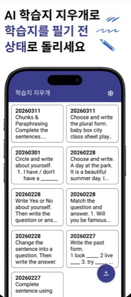
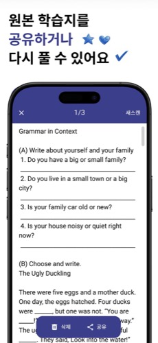
iOS 1 · Android 1 · Planner 1 / iOS 전체 개발
링크와 메모를 GRDB에 먼저 저장하고 AI 태그·자연어 검색으로 다시 찾는 local-first 앱입니다. Clean Architecture·MVVM, FTS5 검색, Share Extension, Firebase Functions fallback과 Jenkins·Fastlane 배포를 구현했습니다.
AGENTS.md에는 반복되는 아키텍처·데이터·보안 규칙만 두고 상세 맥락을 문서와 6개 Skill로 분리했습니다. 구현 전 계획 승인, 파일 범위 제한, build/test·실기기 QA로 Codex·Claude Code의 결과를 검증했습니다.
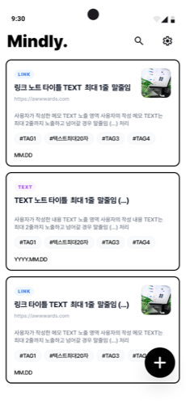
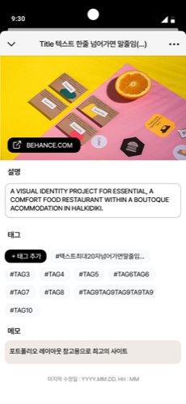
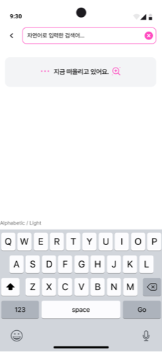
기획·디자인·macOS 개발
출석, 집중 타이머, Todo, 통계, 메뉴바와 위젯을 연결한 생산성 앱입니다. 기능별 kickoff 문서에 목표·정책·파일 경계·위험·out-of-scope를 고정하고, Agent 3개와 Skill 3개로 Codex의 구현과 검증 흐름을 분리했습니다.
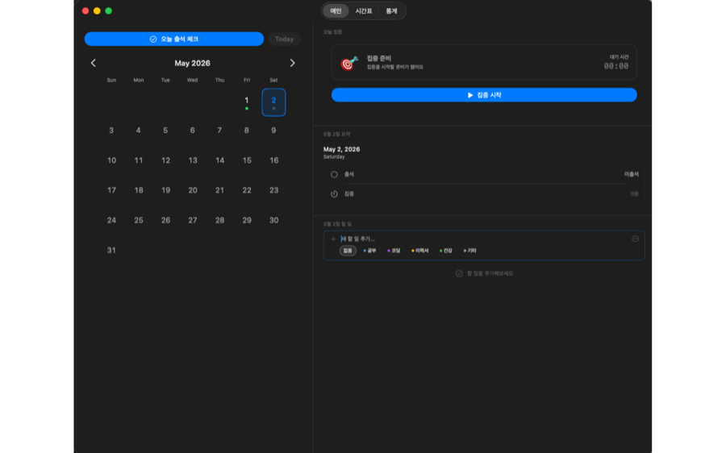
AI WORKFLOW
AI에게 구현 결정을 넘기지 않습니다. 사용자의 흐름과 개발 기준은 직접 정의하고, AI는 승인된 계획과 검증 가능한 범위 안에서 작업하도록 운영합니다.
문제, 진입 경로, 상태 변화, 성공·실패 조건을 기획서 수준으로 정리하고 코드 수정 전 흐름을 먼저 확인합니다.
기존 구조, 영향 파일, 의존성, 위험과 구현 순서를 조사하게 하고 현재 아키텍처에 맞는지 직접 판단합니다.
Domain·ViewModel·UI·테스트로 단계를 분리하고 각 결과를 확인한 뒤 다음 작업을 승인합니다.
정보 우선순위와 상태별 UI를 시각화해 AI가 화면 구조를 추측하지 않도록 합니다.
AGENTS.md·Agent·Skill로 경계를 설정하고 diff, build/test, Preview·Simulator와 수동 QA로 완료를 판단합니다.
CONTACT